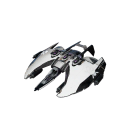

S heavy fighter, made by Paranid
Buy it for the streamer: !buy ship ares for 812 coins
Adopt one the streamer owns: !fleet lists them with their ID, then !buy adopt <ID> for 203 coins. It is renamed after you.
The Ares meets the much demanded need for a Paranid Heavy Fighter. Loaded with weapon hard points and shield generators, the Ares can both take and deliver a beating.
| Hull | 4,800 |
|---|---|
| Crew | 2 |
| Missile storage | 0 |
| Weapon slots | 4 |
| Turret slots | 0 |
| Shield slots | 3 |
| Engine slots | 3 |